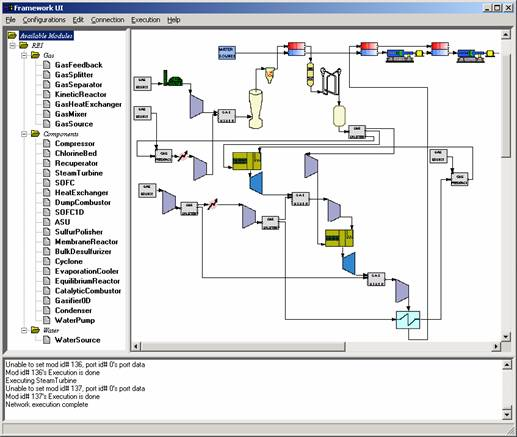
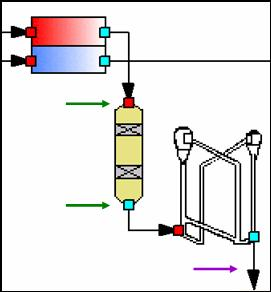

|
Workbench is divided into three frames. The NetEdit frame is the large field located in the top right corner of the screen where networks of modules are constructed. The Module frame is located in the top left corner of the screen and contains all modules. The Error frame located on the bottom of the screen will report any errors detected during startup. Each network is made up of a series of modules--each representing a separate plant process or unit. For a detailed description of each module's function see the REI and Vision 21 Module Index . |
 |
|
 |
Module ComponentsInlet/Outlet Ports: These ports allow data to flow in and out of modules. The red boxes represent inlet ports while the blue boxes represent outlet ports. Note that a module’s inlet and outlet ports appear only when the cursor is placed on the module. Port Connectors: These connect modules such that the outlet of one module becomes the inlet of a second. These connectors facilitate the continued flow of data through a module network. |
The REI Vision 21 Workbench offers a complete package of SCIRun-compatible modules. For a detailed description of each module's function and capabilities, see the Vision 21 Module Index.